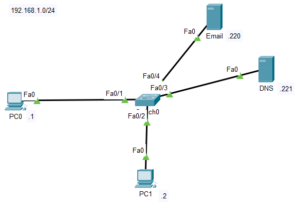
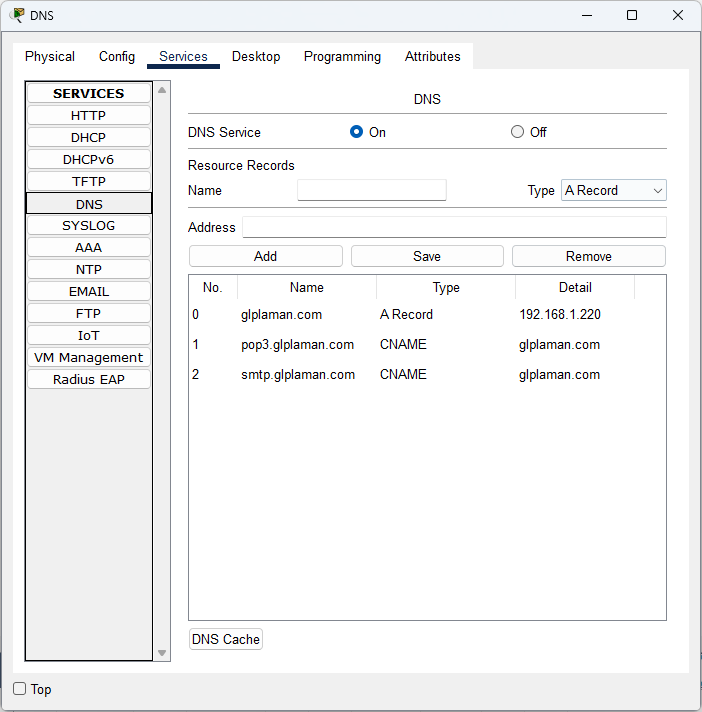
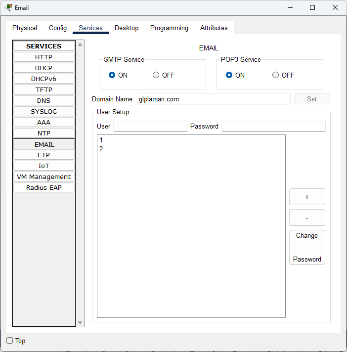
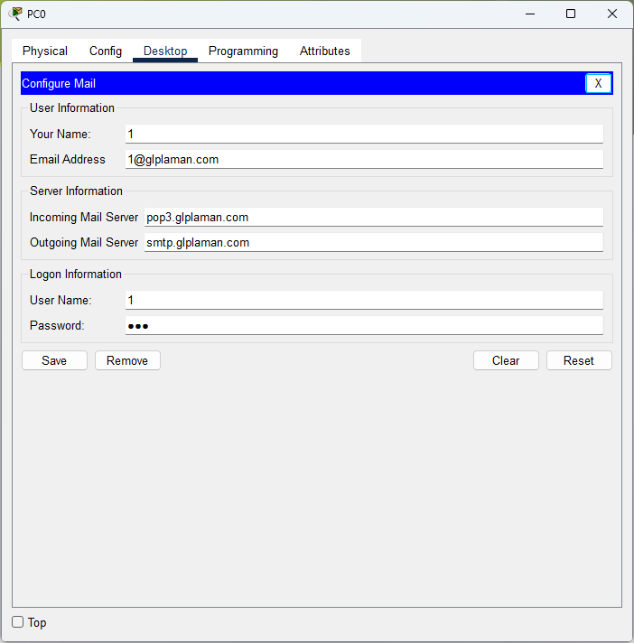
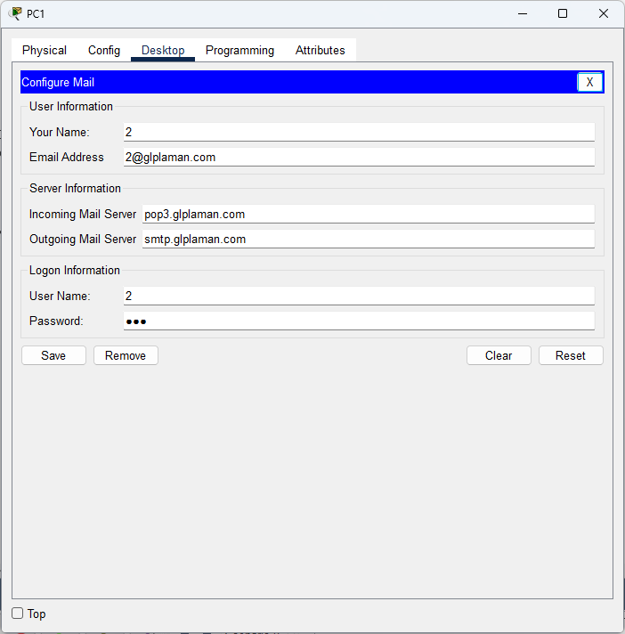
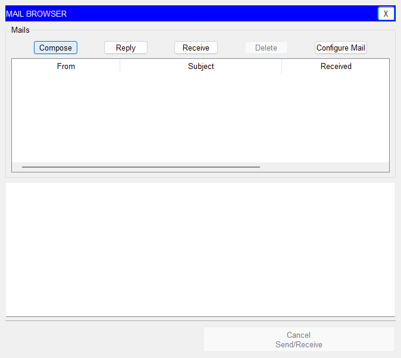
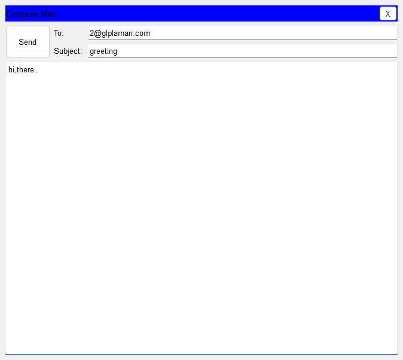
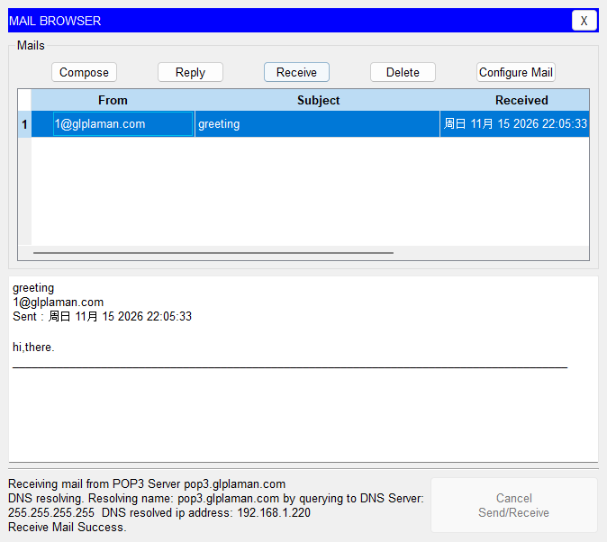

PC0：192.168.1.1
PC1：192.168.1.2
Email：192.168.1.220
DNS：192.168.1.221
开启 DNS 服务；关闭其它服务
配置邮件服务器域名 glplaman.com 和关联的IP 192.168.1.220
配置2条别名 CNAME 记录：pop3.glplaman.com 和 smtp.glplaman.com 是别名
CNMAE → A → IP
也可以设置 3 个 A 记录，指向同一个 IP

开启 SMTP 服务、POP3 服务；关闭其它服务
设置邮件服务器域名 glplaman.com
增加2个用户：1、2，对应的密码分别是111、222

指定用户邮箱：1@glplaman.com
指定收邮件协议：pop3.glplaman.com
指定发邮件协议：smtp.glplaman.com
指定用户登陆信息：1、111

指定用户邮箱：2@glplaman.com
指定收邮件协议：pop3.glplaman.com
指定发邮件协议：smtp.glplaman.com
指定用户登陆信息：2、222



